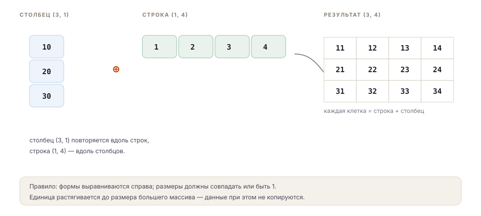

Broadcasting: штамп и тесто Как складывать массивы разной формы — и не удивляться результату
Broadcasting — это правило, по которому меньший массив «растягивается» до формы большего. Не копируя данные и не спрашивая разрешения. Понять его — значит перестать бояться ошибок формы.
01Зачем это backend-разработчику
- Нормализация данных. Вычесть среднее по каждому столбцу, разделить на стандартное отклонение — это broadcasting с
keepdims. - Матрица расстояний и сравнений. «Каждый с каждым» без двойного цикла —
x[:, None] - x[None, :]. - pandas. Арифметика DataFrame и Series выравнивается по индексам — родственная, но другая логика; путать их опасно.
- Собеседование: «что такое broadcasting», «почему (3,) и (3,4) не складываются», «зачем newaxis» — базовые вопросы по NumPy.
02Ассоциация-якорь: штамп и тесто
Большой массив — тесто, маленький — штамп. Штамп прикладывают к тесту: он оставляет отпечаток в каждой точке, но сам не разрезается на куски.
Размер 1 — это «пустая клетка штампа». Она растягивается до размера теста. Если размеры не совпадают и ни один не равен 1 — штамп не подходит, и NumPy говорит об ошибке формы.
03Ассоциативный ряд: восемь звеньев
- Выравниваниеформы сравниваются справа налево
- Совпадениеравные размеры — просто поэлементно
- Единицарастягивается до размера соседа
- НесовпадениеValueError: нельзя
- Результатпо максимуму размеров
- Без копийшаг по оси 0 (strides=0)
- newaxisдобавить ось, чтобы формы сошлись
- keepdimsне потерять ось при агрегате
04Схема: столбец плюс строка

05Как это устроено на самом деле
Правило короткое: формы выравниваются по правому краю; по каждой оси размеры должны либо совпадать, либо один из них быть 1.
| Формы | Результат | Почему |
|---|---|---|
| (3, 4) + (4,) | (3, 4) | (4,) → (1, 4) → (3, 4) |
| (3, 4) + (3, 1) | (3, 4) | (3, 1) → (3, 4) |
| (3, 1) + (1, 4) | (3, 4) | обе оси растягиваются |
| (3, 4) + (3,) | ошибка | (3,) не совпадает по последней оси |
| (2, 1, 4) + (3, 1) | (2, 3, 4) | правое выравнивание |
Почему это не копирование
У «растянутого» массива по оси растяжения stride равен 0: шаг в эту сторону не двигает указатель.
Поэтому np.broadcast_to возвращает view, а память не растёт. Но и запись в такое
представление запрещена — иначе одна ячейка означала бы много значений.
Зачем newaxis
Вектор (3,) выравнивается по последней оси, а нам часто нужен столбец.
v[:, None] делает (3, 1), и дальше broadcasting работает
так, как задумано: v[:, None] * v[None, :] — таблица произведений.
06Лаборатория: запустить и увидеть
Фрагменты файла snippets/10_broadcasting_lab.py.
Шаг 1. Строка прибавляется к каждой строке
a = np.arange(12).reshape(3, 4) row = np.array([10, 20, 30, 40]) print((a + row).shape) print(a + row)
Шаг 2. Столбец прибавляется к каждой строке
col = np.array([[100], [200], [300]]) print(col.shape) print(a + col)
Шаг 3. Столбец на строку — матрица
ones_col = np.ones((3, 1)) ones_row = np.ones((1, 4)) print((ones_col + ones_row).shape) print(ones_col + ones_row)
Шаг 4. Несовместимые формы
a + np.array([1, 2, 3]) # ValueError: operands could not be broadcast together with shapes (3,4) (3,)
Сообщение читается справа налево: последняя ось 4 против 3 — не совпало и ни одна не равна 1.
Исправление — превратить вектор в столбец: np.array([1,2,3])[:, None].
Шаг 5. Центрирование через keepdims
means = a.mean(axis=0) # (4,) means_keep = a.mean(axis=0, keepdims=True) # (1, 4) print(means.shape, means_keep.shape) print((a - means_keep).mean(axis=0))
Оба вычитания дают визуально одинаковый результат, но с keepdims форма
результата однозначна: (3, 4) минус (1, 4) — это
«вычесть среднее по столбцу из каждого элемента столбца».
Шаг 6. View без копирования
big = np.broadcast_to(np.array([1, 2, 3]), (2, 3)) print(big.shape, big.strides, big.flags.writeable)
Stride 0 по первой оси — та самая «растяжка»: обе строки смотрят в одни и те же
три числа. Поэтому запись запрещена.
07Мост: чем это отличается от выравнивания в pandas
pandas выравнивает по индексам, NumPy — по позициям
s = pd.Series([100, 200, 300], index=["a", "b", "c"])
df = pd.DataFrame({"a": [1, 2], "b": [3, 4]})
df + s # выравнивание по именам колонок
df.values + np.array([100, 200])[:, None] # broadcasting по позициям
В pandas df + series сопоставляет по метке, а не по номеру столбца.
В NumPy — строго по позиции. Это две разные дисциплины, и смешивать их в голове — источник тихих ошибок.
SQL: арифметика по строкам и колонкам
SELECT amount * 1.1 FROM orders; -- скаляр «растягивается» SELECT amount + tax.rate FROM orders, tax; -- произведение таблиц: осторожно
В SQL нет broadcasting: скаляр применяется к каждой строке, а для «каждый с каждым» нужен
CROSS JOIN — и это уже осознанное декартово произведение.
08Пять ошибок, на которых спотыкаются
Ожидали вычитание по строкам, а получили ошибку или вычитание по столбцам — из-за правого выравнивания.
v[:, None] или v.reshape(-1, 1).Форма (3, 1) и (3,) «сойдётся» в (3, 3), хотя задумывалось поэлементное вычитание.
shape результата; явно приводить форму.np.broadcast_to(...)[0, 0] = 5 → ValueError: assignment destination is read-only.
.copy().В pandas метки решают, как совместить данные; в NumPy — только позиции.
.to_numpy(), для меточной — pandas-операции.Среднее по оси без keepdims теряет ось, и последующая операция может дать неожиданную форму.
keepdims=True, когда результат участвует в арифметике с исходным массивом.09Вопросы с собеседования
Что такое broadcasting?
Правило, по которому массивы разной формы приводятся к общей форме без копирования: размеры выравниваются справа, единицы растягиваются, результат — по максимуму.
Почему (3,4) и (3,) не складываются?
Правое выравнивание: 4 против 3 по последней оси. Ни одно из чисел не равно 1 — формы несовместимы.
Почему (3,1) и (1,4) дают (3,4)?
По каждой оси один из размеров равен 1 и растягивается до размера другого: 3→3 и 1→4. Итоговая форма — максимум по каждой оси.
Копируются ли данные при broadcasting?
Нет. Растянутая ось имеет stride 0, поэтому представление смотрит в те же ячейки. Запись в такое представление запрещена.
Зачем нужен newaxis?
Чтобы добавить ось и изменить выравнивание: вектор (3,) превращается в (3,1) и начинает вести себя как столбец.
Чем broadcasting в NumPy отличается от pandas?
NumPy выравнивает по позициям формы, pandas — по меткам индекса и колонок. Результат может совпасть, а смысл — нет.
Как вычесть среднее по столбцам из матрицы?
m - m.mean(axis=0, keepdims=True). Без keepdims форма (4,) тоже сработает, но смысл легче потерять.
Как построить матрицу попарных разностей без циклов?
x[:, None] - x[None, :]: столбец минус строка, broadcasting даёт матрицу (n, n).
10Три задачи: сначала своя попытка
01 Нормализация столбцов
Для матрицы 3×4 вычтите среднее по столбцу и разделите на стандартное отклонение по столбцу.
Показать решение
a = np.arange(12, dtype=float).reshape(3, 4) normed = (a - a.mean(axis=0, keepdims=True)) / a.std(axis=0, keepdims=True) print(normed.round(2))
Что важно. Оба агрегата с keepdims=True, иначе вычитание
и деление пойдут по другой оси.
02 Матрица разностей
Для вектора из пяти чисел постройте матрицу попарных разностей без циклов.
Показать решение
x = np.array([10, 20, 35, 50, 80]) diff = x[:, None] - x[None, :] print(diff.shape) print(diff[1]) # разности для второго элемента
Что важно. x[:, None] — столбец (5,1), x[None, :] —
строка (1,5), результат (5,5).
03 Исправить форму
Код m + v падает, потому что v — вектор длины 4, а нужен столбец. Исправьте двумя способами.
Показать решение
v = np.array([1, 2, 3, 4]) m = np.zeros((3, 4)) print((m + v).shape) # (3, 4): v как строка print((m + v[:, None]).shape) # (3, 4): v как столбец print((m + v.reshape(-1, 1)).shape)
Что важно. Форма результата одна, а смысл разный: в первом случае v прибавляется к каждой строке, во втором — к каждому столбцу своего ряда.